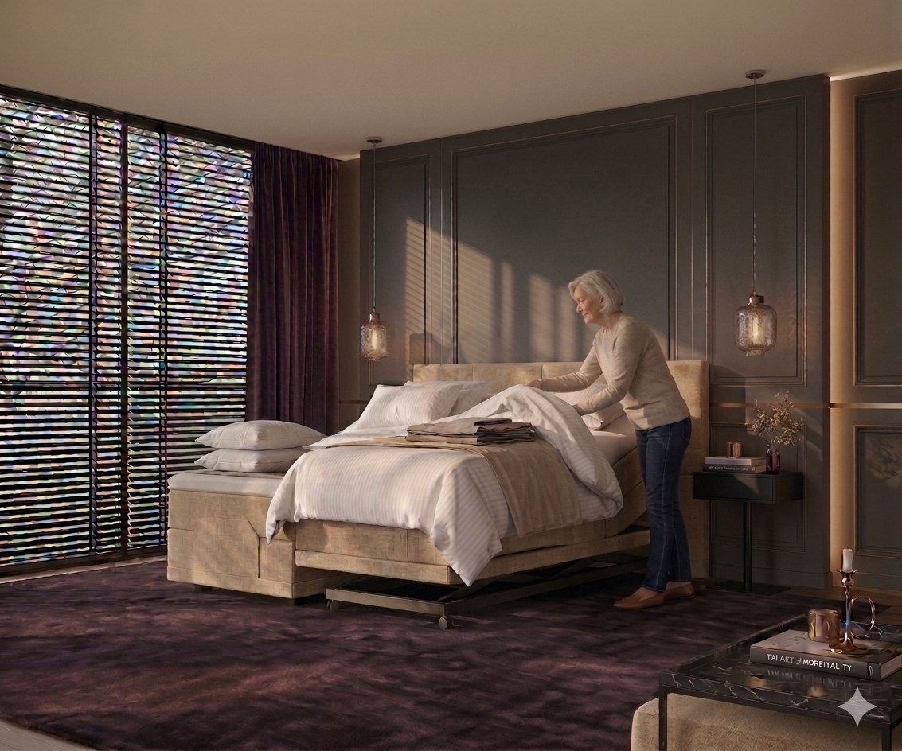
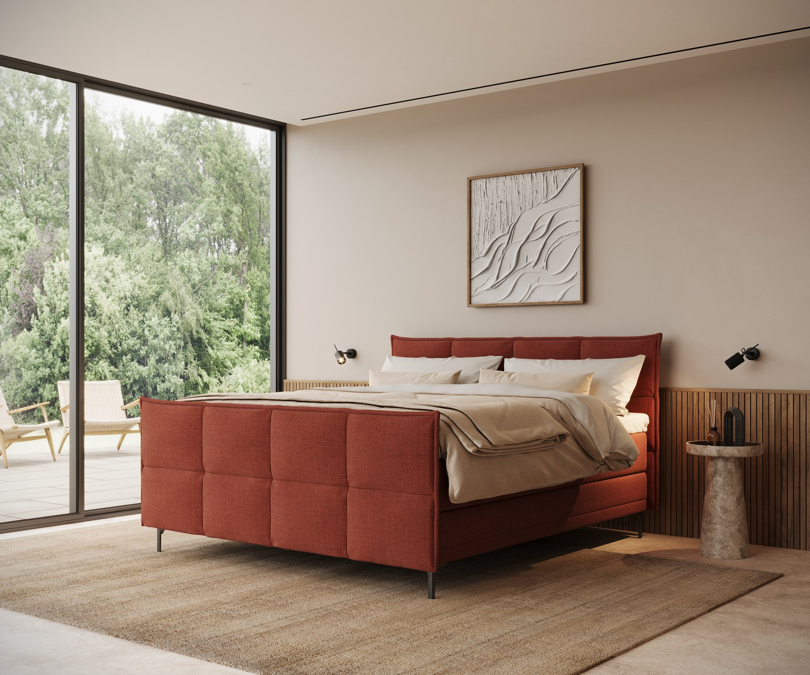
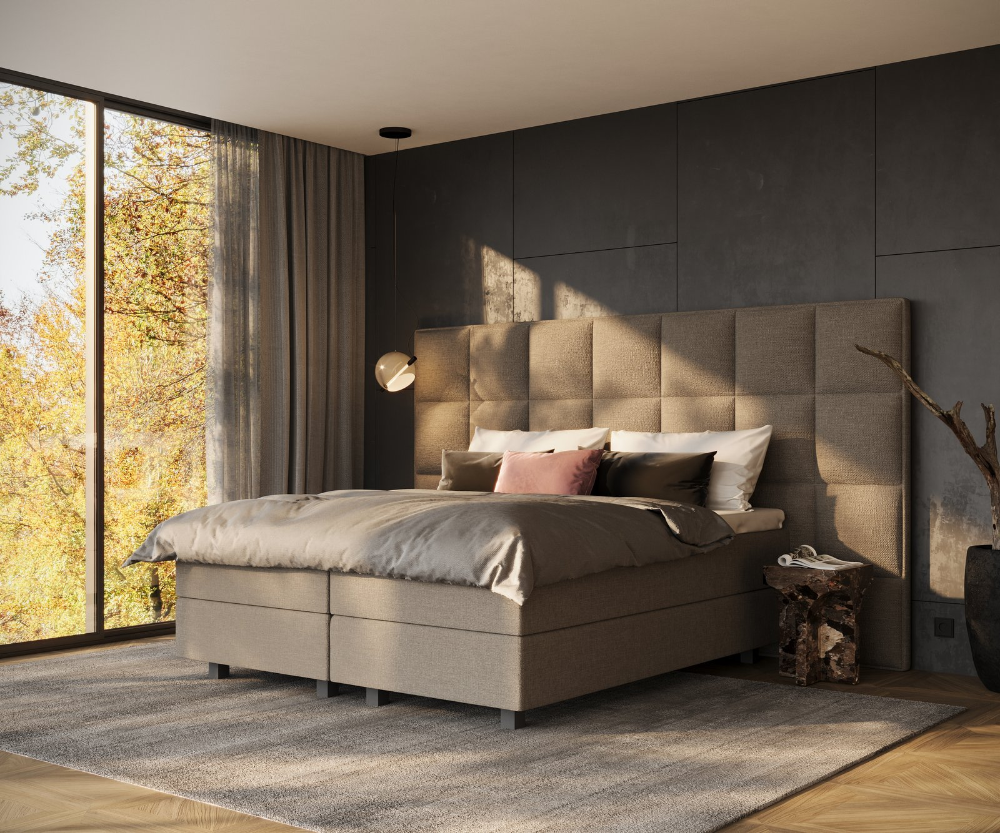
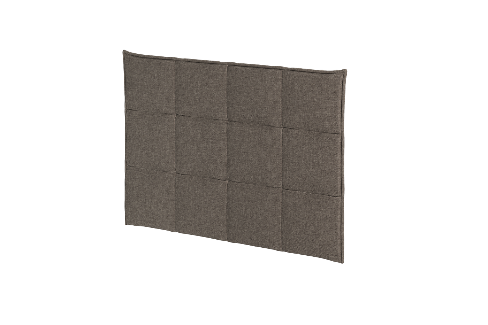

Producten — Boxsprings
Een stabiele basis, tot in de puntjes afgewerkt.
Al onze boxsprings zijn voorzien van 5-zone pocketvering — de ideale basis voor elke Ultima-matras. Ontdek de vier lijnen en hun dikte.
01 — Forma
De veelzijdige basislijn.
Forma is onze veelzijdige basislijn: een dikte van 19 cm met een 13 cm hoge 5-zone pocketveer, leverbaar in meer dan 100 stoffen en uit te breiden met opties zoals een sierplint.
- 19 cm dikte
- 13 cm hoge 5-zone pocketveer
- Ook elektrisch verstelbaar verkrijgbaar
- Uit te breiden met een sierplint, gestoffeerd of in eiken (4 beitskleuren)
- Afneembare stof
Goed om te weten: slanke hoofdborden worden vaak gecombineerd met de lagere Forma, terwijl grote hoofdborden op de Suprema een chique, hotelachtige uitstraling geven.

Forma02 — Forma Design
Een slanke, verfijnde uitvoering van Forma.
Forma Design is de lage, strakke variant binnen de Forma-lijn: met een dikte van 11 cm en een 6 cm hoge 5-zone pocketveer oogt deze lijn opvallend slank, zonder in te leveren op ondersteuning. Net als Forma leverbaar in meer dan 100 stoffen en te combineren met ieder Ultima-hoofdbord.
- 11 cm dikte
- 6 cm hoge 5-zone pocketveer
- Laag, strak silhouet
- Meer dan 100 stoffen om uit te kiezen
- Afneembare stof
Goed om te weten: een lagere dikte zoals bij Forma Design past goed bij een minimalistische slaapkamer of een lager plafond, en geeft het hoofdbord meer visuele nadruk.
03 — Stricta
Strak afgewerkt, met sierplint als standaard.
Stricta heeft een 6 cm hoge 5-zone pocketveer en wordt standaard afgewerkt met een sierplint van 7 cm — samen goed voor een totale dikte van 22 cm — voor een strakke, verzorgde uitstraling zonder verdere opties nodig te hebben.
- 22 cm dikte (incl. 7 cm sierplint)
- 6 cm hoge 5-zone pocketveer
- Sierplint van 7 cm, standaard inbegrepen — gestoffeerd of in eiken (4 beitskleuren)
- Ook elektrisch verstelbaar verkrijgbaar
- Meer dan 100 stoffen om uit te kiezen
- Afneembare stof
Goed om te weten: de standaard sierplint van Stricta maakt deze lijn een praktische keuze als je een verzorgde afwerking wilt zonder zelf opties te hoeven samenstellen.

Stricta
Suprema04 — Suprema
De meest imposante lijn, voor een hotelchique uitstraling.
Suprema is met een dikte van 25 cm en een 13 cm hoge 5-zone pocketveer de meest imposante van de vier lijnen — voor wie een chique, hotelachtige uitstraling zoekt.
- 25 cm dikte
- 13 cm hoge 5-zone pocketveer
- Ook elektrisch verstelbaar verkrijgbaar
- Meer dan 100 stoffen om uit te kiezen
- Afneembare stof
Goed om te weten: bij alle elektrisch verstelbare boxsprings — ook Suprema — is een zorgfunctie (hoog-laagframe) mogelijk.
Kies je hoofdbord
Elke boxspring, in elk hoofdbord.
Het hoofdbord kies je los van de boxspringlijn: van strak en vlak tot geblokt of met ingebouwde verlichting. Bekijk het volledige assortiment aan vormen en stiksels.
Bekijk alle hoofdborden
HoofdbordenCombineer je boxspring met de rest van de collectie
Bekijk ook onze matrassen, topmatrassen, gestoffeerde ledikanten en kussens om je bed compleet te maken.
Bekijk alle productenErvaar onze boxsprings zelf
Onze dealers helpen je graag de juiste lijn en dikte te kiezen.
Vind een dealer